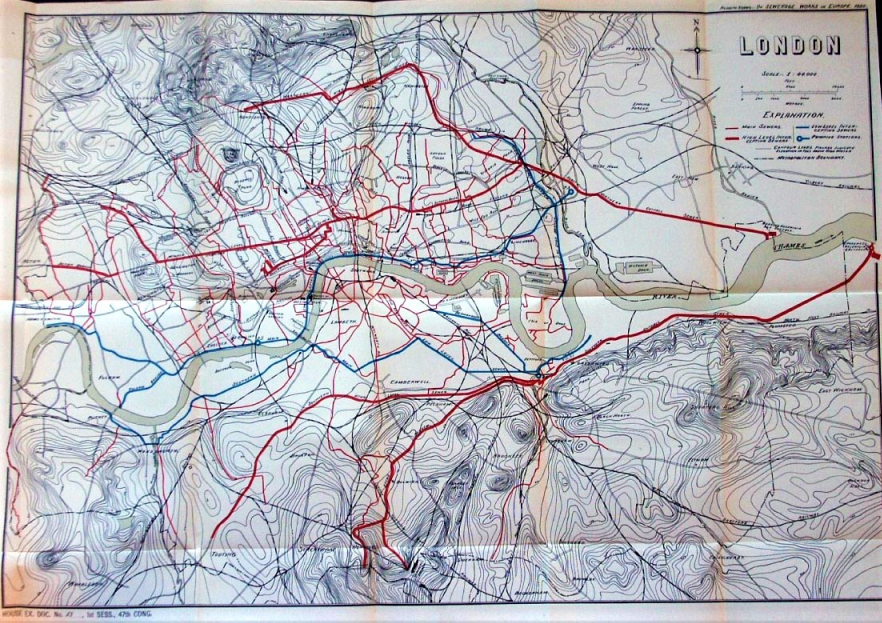

Don't Take It for Granite - Use Cement!
Waste was just dumped wherever - onto the street, into the grass, down a hole known as a cesspit. The former two come with their slew of obvious issues, and the cesspits were often not dug or built with water safety in mind. They would often leech filth and waste into the wells from which people drew their water. Yes, the water they would bathe in (gross, but a bit less dangerous), cook with (boiling for long enough does kill the bacterium that causes cholera, but food can still be tainted), and drink directly (uh oh!) was quite literally "full of shit."
While prevailing medical theories at the time were mixed to say the least, they all ultimately accepted the same conclusion: whether it was bad air or bad water, closed sewers would curb the rampant spread of these nasty, deadly sicknesses.
The cost was exorbitant, but the human cost was growing even higher. The project started in 1859 and construction continued until 1868, at a cost of £4.2 million - and that was the number at the time. Accounting for nearly two hundred years of inflation using online calculators, that's equivalent to over £4.2 BILLION in 2026! No wonder the government was reluctant to cause a great stink about... well, that Great Stink!

| BEFORE | AFTER |
|---|---|
| Dump waste wherever | Closed sewer system |
| Bacterial epidemics rampage | Typhus, Typhoid, and Cholera down |
| Miasma Theory rules the city | Contamination Theory takes hold |
| Gross waste holes | Still used today, with some updates |